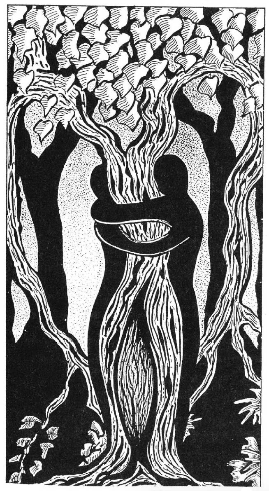

One of the most important legacies of Sigmund Freud, the great 20th century pioneer of dream exploration and father of the contemporary dream work movement, is his idea that ALL dreams, no matter how innocent and innocuous they may appear to be at first glance, carry significant layers of meaning related to the dreamer's sexuality and repressed sexual longings. Using the contemporary dreamer's "aha!" of recognition-which in my view is the only reliable touchstone in the search for and verification of the deeper meanings of dreams below the surface of obvious appearance-it regularly turns out that Freud was quite right! At least to this extent: contemporary dreamers blush, and stammer, and shift around in their seats, and otherwise confirm the symbolic sexual nature of their seemingly "nonsexual" dream experiences on a regular basis.
In the dream world, going through a door turns out to be sexual... not going through a door turns out to be sexual. Swimming in dreams is sexual. Eating in dreams is sexual. Using a sewing machine in a dream is extremely sexual, even if the dreamer uses a sewing machine in waking life without being consciously aware of its sexually charged quality... In fact, any list of this kind of "sexual imagery in dreams" is endless because everything in a dream has sexual overtones, undertones, and implications... among other things.
These layers of sexual symbolism may not be the most important or significant layers of meaning in any given dream, but they are always present. All dreams carry these layers of sexual resonance, along with many others, including symbolic reflections of the dreamer's physical health, his or her emotions, past influences, concerns about the future, "day residue," creative problem solving, etc... to name only a few of the most obvious. It is this inherent, "over-deter- mined", "multi-vocal" quality of dreams that makes working with them in groups-where participants are encouraged to share their projections and potential insights, such a rewarding and productive experience-and makes working with one's own dreams in solitude such a problematic technique. Working with one's dreams in solitude is a noble and necessary occupation but, in the long run, without help from others, the self-generated "aha!"s of the dreamer alone will inevitably cluster up along the lines of what he or she already knew and believed to begin with, and no dream ever comes just to tell the dreamer what he/she already thinks or knows consciously. Among the multiple layers of meaning and significance that are always present in every dream, there is always something new or novel and it is precisely these layers of innovative, fresh possibility that the solitary dreamer has the greatest difficulty recognizing without the help of others.
Whenever a dreamer dreams of some sort of overt, explicit sexuality and sensual encounter, most contemporary dream workers are inclined to take these images and experiences more or less at face value, assuming that they merely emphasize the already sexual implications of the dreaming experience. In practice, we tend to explore the sexual/relational aspects of such dreams with even more zeal and attention. This often generates interesting and valuable "aha's!" of insight, but it also tends to miss perhaps the most important point: these overtly sexual images and experiences are themselves symbolic of other, often even deeper orders of longing.

We human beings appear to be inherently predisposed to symbolize the deepest and most persistent longings in our lives as sexual/ relational feelings and desires. This seemingly universal connection and symbolic resonance between "sex" and other kinds of "deep longing" is just one example of the innate human predisposition to generate particular kinds of symbols in relation to particular kinds of experience. Carl Jung suggests that these repeating, cross-cultural tendencies reveal "archetypes of the collective unconscious," or "repeating patterns of the objective psyche".
Overt sexuality and sensuality in the dream world tend to resonate with the other "universal" longings that characterize the human condition, most particularly the desire to live lives in harmony with patterns and structures of meaning and significance that transcend mere personal comfort or discomfort. All humans-no matter how cynical and nihilistic we may pretend or appear to be-have a deep, inescapable hunger to believe that our lives, joys and sufferings mean something. I would call this universal longing "spiritual" (although I admit that the word "spirituality" is swiftly becoming somewhat tacky and shopworn through overuse in the "New Age" movement, I have been unable to find an adequate replacement for the word "spiritual").
Frustrated before completion, it is often a symbolic reflection of a waking experience in which the dreamer felt the possibility of a "spiritual moment," but for whatever reason chose to ignore it, not follow through and experience or explore it more fully. The "opinion of the collective unconscious" (if one may use such a metaphor), appears to be... that to actually find intimations of the (archetypal) "beloved", and not give oneself wholly and ecstatically to the encounter, is like meeting the longed-for potential life partner and not experiencing the culmination of that desire. I remember one theological school student who reported such a dream and in the ensuing discussion told a story about feeling "the Presence of the Divine" while sitting in the Berkeley City Rose Garden and then hurrying away, rather than giving herself fully to the moment, because she was "afraid she would be late for her class in the Medieval Mystics... "In retrospect, the irony highlighted by the dream was inescapable...
Conversely, when a dreamer experiences one of his/her unique versions of the archetypal "ecstatic orgy" dream, it is most often associated with having such an intuition of the immanence of the Divine in waking life and allowing that experience to take precedence over the mundane schedule and responsibilities of non-ecstatic, ordinary existence. It also suggests that the dreamer has found satisfactory answers and experiential solutions to his/her most pressing religious and spiritual questions and uncertainties. The archetypal dream of ecstatic sexual encounter often reflects a hard-won psycho-spiritual maturity that transcends "the problem of Evil," and the limitations of the traditional "Sin and Salvation" view of the Divine.
The archetypal "rape" dreams often suggest a third scenario in waking life: that the dreamer has experienced such a moment of awakening spiritual possibility, but in a context that is unusual or unexpected. Rather than transcend the boundaries of conventionality and habit, the person "shifts" the sense of wonder and possibility by an act of will and focuses it on a more familiar, conventional, and "socially acceptable" practice. Many times, I have heard such dreams from theological students, accompanied by stories from their waking lives of encountering exotic spiritual practices which the student found strangely fascinating and attractive. These dreamers often report moments of shock in the midst of the experience, accompanied by thoughts like: "Hey! Wait a minute! I didn't come to seminary to become a Buddhist! I came here to become a better Presbyterian (or Lutheran, or Catholic, Episcopalian, or... )! I'm going to turn my attention back to the spiritual practices of my own tradition and focus this sense of exciting spiritual possibility there, where it belongs...!" Unfortunately, (or fortunately, depending on your point of view), the "opinion of the collective unconscious" appears to be that manipulating one's spontaneous spiritual/intuitive awareness by acts of will and "faith" in this fashion is tantamount to "rape". It's not that communion with the Divine does not take place in manipulated and consciously controlled situations like this, but the (symbolic sexual) connection is more like "rape" than "making love."
In my experience-which now extends more than 30 years, and includes working with many "rape dreams"-even when these dreams have levels of reference to actual sexual/relational abuse in the dreamer's waking life, there is always an important level of meaning associated with the impact of these experiences on his/her sense of spiritual possibility and connection. Even if such dreams are pointing to the release of previously amnesic memories of childhood sexual abuse-a situation that is, alas, all too common-these dreams also point to an even deeper level, where the impact of that abuse on the dreamer's psycho-spiritual development is also symbolically described. There is nothing like being betrayed by an adult to predispose a person to fear and mistrust "spiritual authorities" and potentially "overwhelming" spiritual experiences as an adult.
The good news is that all dreams come in the service of health & wholeness, even the nasty, explicit dreams of rape and coercion. No dream ever comes to say, "Nyeah, Nyeah - you have these problems and there's nothing you can do about them!" If a dreamer remembers a dream with the manifest content of nasty, coercive sexual encounter-or any distressing, "nightmarish" content, for that matter-then the very fact that the dream has been remembered means that the dreamer is actually capable of dealing positively, creatively, and transformatively with all the issues that the dream raises. If the dreamer were actually unable to deal with the issues symbolically evoked by the dream, then he/she simply would not have remembered the dream in the first place.
For these reasons, it is always worth paying particular attention to dreams that present manifest sexual and sensual content and asking whether or not they offer symbolic reflections of the dreamer's spiritual search, and his or her longings for a more meaningful life.